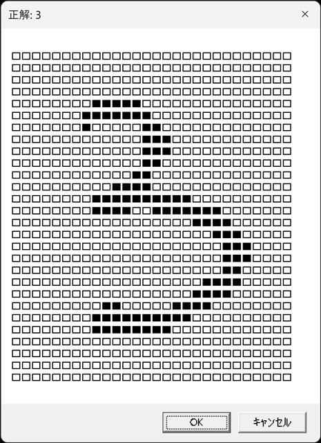

バイナリファイルを読む
概要
ADO.Streamオブジェクトを使ってバイナリファイルを読む。
バイナリファイルの入手
ニューラルネットワークの訓練と評価に使用されている、MNISTデータベース(手書き数字画像のデータ)を https://yann.lecun.com/exdb/mnist/ からダウンロードする。
注) 2024年11月11日現在、ダウンロードできなかった。
- train-images-idx3-ubyte.gz
- train-labels-idx1-ubyte.gz
- t10k-images-idx3-ubyte.gz
- t10k-labels-idx1-ubyte.gz
圧縮されているので7-Zipなどを使って展開する。
| ファイル名 | 説明 | Byte |
|---|---|---|
| train-images.idx3-ubyte | 60,000枚分の訓練用画像 | 47,040,016 |
| train-labels.idx1-ubyte | 訓練用画像の正解ラベル | 60,008 |
| t10k-images.idx3-ubyte | 10,000枚分の評価用画像 | 7,840,016 |
| t10k-labels.idx1-ubyte | 評価用画像の正解ラベル | 10,008 |
これらはバイナリファイルであり、1枚ずつの画像ファイルではない。
train-images.idx3-ubyte、t10k-images.idx3-ubyteのファイル構造
| データ | サイズ | 説明 |
|---|---|---|
| ヘッダー | 16byte | |
| 1枚目 | 784byte | 横28×縦28=784ピクセル 1ピクセルあたり1byteで0～255のグレースケールを表す |
| ... | ... | ... |
| n枚目 | 784byte | 同上 |
- 16byte+784byte/枚×60,000枚=47,040,016byte
- 16byte+784byte/枚×10,000枚=7,840,016byte
train-labels.idx1-ubyte、t10k-labels.idx1-ubyteのファイル構造
| データ | サイズ | 説明 |
|---|---|---|
| ヘッダー | 8byte | |
| 1枚目 | 1byte | 0～9のいずれかの数値を表している |
| ... | ... | ... |
| n枚目 | 1byte | 同上 |
- 8byte+1byte/枚×60,000枚=60,008byte
- 8byte+1byte/枚×10,000枚=10,008byte
Streamオブジェクト
Streamオブジェクトはテキストファイルやバイナリファイルを開くことができる。
プロパティ
| プロパティ | 説明 | 備考 |
|---|---|---|
| Charset | 保存するときの文字コード | |
| EOS | ストリーム位置の末尾であればTrue | True/False |
| LineSeparator | テキストの改行文字 | |
| Mode | Streamのアクセスモード | |
| Position | Stream内の現在位置 | 先頭は0 |
| Size | Streamのバイト数 | |
| State | Streamの状態 | |
| Type | Stream内のデータ型 | 1:バイナリ 2:テキスト |
メソッド
| メソッド | 説明 | 備考 |
|---|---|---|
| Cancel | 非同期Streamを停止 | |
| Close | Streamを閉じる | |
| CopyTo | Streamの内容を別のStreamにコピーする | |
| Flush | Streamの基になるオブジェクトに書き込む | |
| LoadFromFile | ファイルを開く | |
| Open | Streamを開く | |
| Read | Streamからバイトを読み取る | Type=1のとき |
| ReadText | Streamからテキストを読み取る | Type=2のとき |
| SaveToFile | ファイルに保存する | |
| SetEOS | ストリーム位置の末尾を設定する | |
| SkipLine | 行をスキップする | Type=2のとき |
| Write | バイトをStreamに入力する | Type=1のとき |
| WriteText | テキストをStreamに入力する | Type=2のとき |
参考
訓練用画像を表示する
バイナリファイルからデータを取得し、疑似的な画像をダイアログボックス上に表示する。
表示させるデータはランダムに決定する。
プログラムの説明
- Streamオブジェクトをバイナリモードで開いて、LoadFromFileでファイルを取得する。
- StreamオブジェクトのReadメソッドで1バイトずつのバイトデータを読む。
- 読むたびに、現在位置は次のバイトへ移動する。
- バイトデータにAscB関数を使って0～255の数値へ変換する。
- 数値が127以下なら□、128以上なら■として疑似画像を構成する。
'手書き数字画像のバイナリファイルを読んで、疑似的な画像を表示する
Dim path1, path2
'MNISTデータベースファイルをC:\samplesに保存している場合
path1 = "C:\samples\train-images.idx3-ubyte" '画像データ
path2 = "C:\samples\train-labels.idx1-ubyte" '値データ
Dim strm1, strm2
Set strm1 = CreateObject("ADODB.Stream")
Set strm2 = CreateObject("ADODB.Stream")
strm1.Type = 1 'BINARY
strm1.Open
strm1.LoadFromFile(path1)
strm2.Type = 1 'BINARY
strm2.Open
strm2.LoadFromFile(path2)
Call Randomize() '乱数ジェネレータを初期化
Dim num, img, lbl
'キャンセルボタンが押されるまで繰り返す
Do
num = Int(Rnd * 60000) '0～59999のランダムな整数
img = GetImage(num, strm1) '文字で作った疑似的な画像
lbl = GetValue(num, strm2) '正解の数値
'表示する
If Msgbox(img, vbOKCancel, "正解: " & lbl) = vbCancel Then
Exit Do
End If
Loop
strm1.Close
strm2.Close
'以上で終了
Function GetImage(n, sm)
'文字で作った疑似的な画像を取得する
Dim i, j '画像の横と縦の座標
Dim bt
Dim buf
sm.Position = 16 + 784 * n '現在位置をn+1番目の画像データの先頭に移動する
'1画像の各ピクセルデータから□と■で作成した疑似的な画像を作成する
For j = 0 To 27
For i = 0 To 27
bt = AscB(sm.Read(1)) '1バイト読んで数字に変換
If bt < 128 Then
buf = buf & "□"
Else
buf = buf & "■"
End If
Next
buf = buf & vbCr
Next
GetImage = buf
End Function
Function GetValue(n, sm)
'正解の数値を取得する
sm.Position = 8 + n '現在位置をn+1番目の値データに移動する
GetValue = AscB(sm.Read(1)) '1バイト読んで数字に変換
End Function
実行結果
